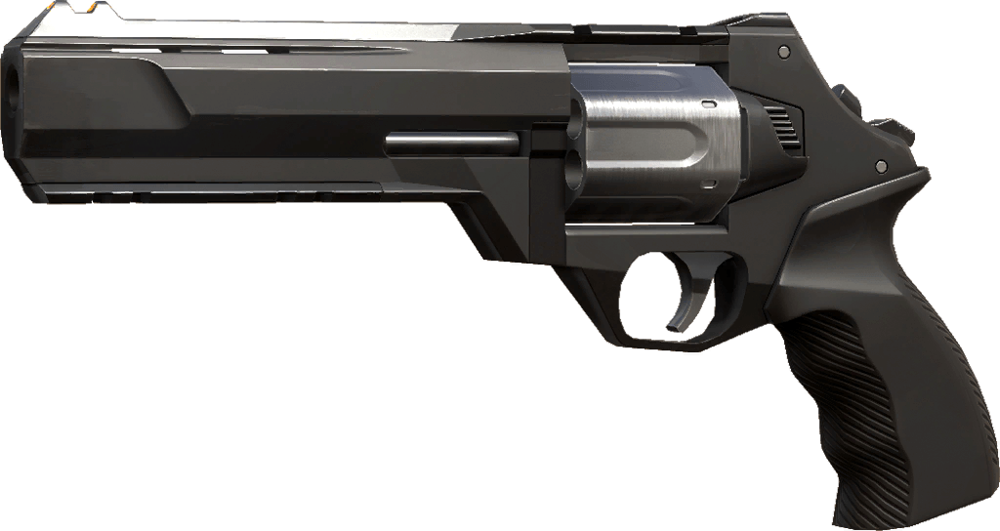
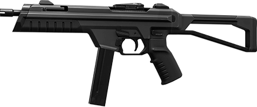
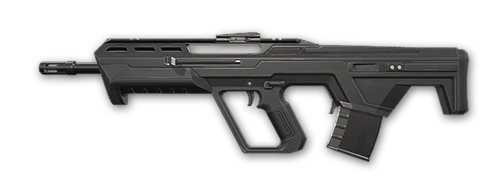
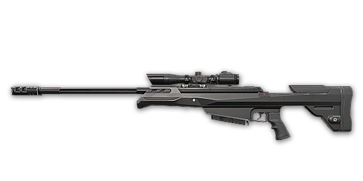

In Valorant, Agents have a variety of weapons to utilize and cause damage to other Agents.
Overview
Agents have different variations of weapons, typically firearms, to cater to specific playstyles or metas. Weapons are separated by two categories, Sidearms and Primary weapons. Sidearms consists of pistols, whilst primaries include SMGs, shotguns, rifles, sniper rifles, and machine guns. Guns have limited amounts of ammo but come with reserve magazines. Bullets deal different amounts of damage depending on the gun, the body part they hit, and the distance between the shooter and the target. Each gun deals a set amount of damage to an enemy's body at its shortest range and then uses multipliers on this value to calculate the damage it will deal to the head and legs at close range and all body parts at further ranges. Resulting numbers with a decimal value of .5 are rounded down instead of up. Weapons can be purchased by Agents using creds during the pre-round sequence. Each Agent is equipped with a Knife and the Classic sidearm for free by default. Agents will keep the weapons they purchase through each round until they die. Weapons can also be picked up off the ground from deceased players, both friendly and hostile, which will carry on with the player into the next round.
Weapon Menu
List of Weapons
Sidearms
Classic
The Classic is a pistol that all players receive upon spawning. It has two firing modes, a standard semi-automatic single-bullet primary fire and a semi-automatic shotgun alternate fire that fires three bullets instantly but only at around a third of its usual fire rate. Despite what may be suggested about its strength by the Classic being the gun given away for free, it is actually a versatile sidearm. Whilst the other sidearms are usually suited for a particular range, the Classic can be used in medium range engagements thanks to its large falloff range but can also quickly dispatch an enemy at close range using its shotgun mode. If a player isn't expecting to take fights at one specific range, the Classic's versatility can entice them into keeping it over upgrading to another sidearm, allowing them to use their creds on shields or abilities instead.
Shorty

The Shorty is the cheapest purchasable weapon in the game. As a sidearm equivalent of a shotgun, it is most effective at short range to instantly take an enemy by surprise. With good damage and functionality despite its low price tag, it can even be used to catch out a fully-bought enemy in eco rounds, allowing the player to gain a powerful weapon upgrade for very little investment. As happens with all shotguns due to their pellet spread though, the Shorty is effectively useless at long ranges. The Shorty especially also has limited use due to its high pellet spread at medium range and only being able to hold 2 shells at a time, meaning it cannot effectively be used in sustained firefights against multiple enemies.
Frenzy
The Frenzy is a low-cost automatic pistol. As a sidearm equivalent of an SMG, it's not too punishing to use on the move at short ranges, making it most effective at that range and the best sidearm to use in such scenarios, though to challenge enemies who have full-bought getting headshots will most likely be necessary. Its high rate of fire and small magazine size however means it will run out quickly and, unless controlled exceptionally well, isn't great at taking out multiple enemies at once. This makes it especially risky to spray through vision blockers with if using it during a pistol or eco round as the player is much more likely to run out of ammo than most other weapons.
Ghost

The Ghost is a low-cost semi-automatic pistol. Equipped with a large magazine and a silencer, it can be used to spam through vision blockers without much risk to the player's ammo count or positioning. Whilst proficient at all ranges, it is especially good for picking off long-range enemies, though at shorter ranges it does not offer much more power than a Classic outside of pistol rounds. Compared to the costlier Sheriff, the Ghost is less powerful in pistol rounds but isn't too far behind in power when used against fully-shielded enemies unless you can hit your headshots. T he Ghost's higher fire rate and magazine capacity also make it more forgiving if the player misses some of their shots.
Sheriff

The Sheriff is a semi-automatic revolver and the most expensive sidearm in the game. Able to kill enemies with a single bullet to the head at most ranges and health totals, it can be used to challenge even enemies who have full-bought. It's high penetration and extra reserve magazine also makes it useful for spamming for wallbangs during pistol or eco rounds. With a low-capacity magazine and low fire rate however, even one missed shot can end up being punishing. The Sheriff's high recoil also promotes exceptional control and precision in order to use it when fighting multiple enemies.
SMGs
Stinger

The Stinger is a low-cost SMG. It has two firing modes, a standard automatic single-bullet primary fire and a semi-automatic burst-mode alternate fire that fires four bullets in a burst at around an eighth of its usual fire rate. Alternate fire also increases the distance that falloff damage begins to occur at. As an SMG, the Stinger is most effective at shorter range or when used on the move. It's high fire rate makes it great for taking out single targets when buying light and can be used to surprise an enemy in tight spaces, allowing the player to gain a weapon upgrade for little investment thanks to the Stinger's cheap cost. Compared to the costlier Spectre SMG, the Stinger is not completely outshone as its power comes with its ability to kill individual agents quickly. However, the Stinger's lower magazine capacity and higher fire rate make it unsuitable for sustained firefights against multiple enemies, given that a magazine will empty in just over a second. Also, despite ADS and burst often being associated with better precision at long range, the Stinger's alternate fire is affected by recoil within the burst itself, meaning exceptional control is needed to ensure all of the burst's bullets hit the target at longer ranges.
Spectre

The Spectre is a moderately-priced SMG. Equipped with a large magazine and a silencer, it can be used to spam through vision blockers without much risk to the player's ammo count or positioning. As an SMG, the Spectre is most effective at shorter range or when used on the move, though it has decent stats and features all-round to make it usable at medium to long range as well. As a more expensive SMG and expected upgrade to the Stinger, the Spectre's higher magazine capacity makes it a better option for sustained firefights against multiple enemies. However, the Spectre's lower fire rate makes the Stinger a more suitable choice for eliminating individual agents. In comparison to the similarly-priced Ares, the Spectre has more mobility and lower spread but cannot compete with an Ares player who is in control of their fire in a sustained firefight, though the Spectre is quicker at wiping out enemies with headshots at close range.
Shotguns
Bucky

The Bucky is a low-cost shotgun and the cheapest primary weapon in the game. It has two firing modes, a standard single-shell primary fire and a canister alternate fire that allows the shell to travel a short distance before spraying its pellets instead of immediately spraying from the barell of the gun, allowing the user to deal some damage to targets at medium range. Shells shot using Alternate Fire only produce a reduced amount of pellets however, and enemies hit by the canister before it reaches the required distance to explode will only take 1 pellet worth of damage. As a pump action shotgun, the Bucky is reloaded one shell at a time. Because the Bucky's reload time is also shorter than it's fire rate, this means that a user can reload a shell in between shots, effectively increasing the magazine's capacity to the entire available reserve. As with all shotguns due to their pellet spread, the Bucky is effectively useless at long ranges. The Bucky especially has a low fire rate, meaning it cannot effectively be used against multiple enemies at once, which is a task better served by the Bucky's direct upgrade, the Judge.
Judge

The Judge is a moderatley-priced automatic shotgun. It is best used in situations that put the user in close range against multiple enemies, being able to wipe them out quickly should they risk not clearing such small areas beforehand. As with all shotguns, the Judge has pellet spread that can be reduced by crouching, though the spread still makes it effectively useless at long ranges no matter what. As a more expensive shotgun and expected upgrade to the Bucky, the Judge's higher rate of fire makes it a better option for taking on multiple enemies at once. However, the Judge's lower effective magazine capacity and lower damage makes the Bucky a more suitable choice in sustained firefights or for taking out individual targets.
Rifles
Bulldog

The Bulldog is a moderately-priced rifle. It has two firing modes, a standard automatic single-bullet primary fire and a semi-automatic burst-mode alternate fire that fires three bullets in an accurate burst at around a fifth of its usual fire rate. The Bulldog can be a good option when you're not saving but the rest of your team has stronger buys for the round whilst you don't have the creds to buy a more expensive rifle. However, all the other rifles are upgrades over the Bulldog when they can be purchased; players looking to tap heads with the Bulldog's burst fire can use the Guardian instead, with higher accuracy, damage, and penetration, whilst general short-mid range combat is better suited for the Phantom and Vandal with their higher rates of fire.
Guardian

The Guardian is a moderately-priced semi-automatic rifle. It is most effective in long-range fights in the hands of players who are confident in their ability to hit headshots at such distances, being more accurate than a Vandal. The Guardian's high penetration also makes it useful for getting wallbang kills. In short to medium range fights however, the Guardian cannot compete with the Phantom or Vandal due to their higher rates of fire.
Phantom

The Phantom is a high-cost automatic rifle. One of VALORANT's best general-purpose weapons, it is most effective at short to medium range where it is able to spray down multiple enemies at once due to its high rate of fire. It also comes equipped with a silencer, allowing it to be used to spam through vision blockers without much risk to the player's ammo count or positioning. The Phantom is able to instantly kill an enemy with a single headshot, but its damage falloff means this no longer becomes the case at medium to long ranges. Players hitting the initial headshot but failing to hit a second killing shot before they die themselves may find the Vandal preferable in such situations.
Vandal

The Vandal is a high-cost automatic rifle. One of VALORANT's best general-purpose weapons, it is most effective at picking off individual targets at longer ranges due to having no falloff, allowing it to kill any enemy with a single headshot at all ranges. Compared to VALORANT's other general-purpose rifle, the Phantom, the Vandal is guarenteed to instantly kill an enemy with one bullet to the head whereas the Phantom's damage falloff results in it requiring multiple bullets at medium to long range to get headshot kills. However, the Phantom's higher fire rate and accuracy make it better at taking on multiple enemies at short to medium ranges over the Vandal.
Sniper Rifles
Marshal

The Marshal is a low cost sniper rifle. As a sniper, it has a scope with a single zoom setting on its Alternate Fire mode that has perfect accuracy when standing still. Despite sniper rifles usually being extremely inaccurate when used in Primary Fire mode, the Marshal is surprisingly accurate in this case, meaning it can be used to take on multiple enemies at once so long as the user can hit their shots. As a lever action sniper rifle, the Marshal is reloaded one bullet at a time. Because the Marshal's reload time is also shorter than it's fire rate, this means that a user can reload a bullet in between shots, effectively increasing the magazine's capacity to the entire available reserve. Compared to the costlier Operator, the Marshal's is better at fighting multiple enemies due to its higher fire rate, but this would require exceptional aim from ther user as they will need to hit headshots instead. The Operator meanwhile deals much more damage that allows it to instantly kill enemies with a body shot as well as headshots, whereas the Marshal can only do this against unshielded enemies.
Operator

The Operator is a high-cost sniper rifle and the most expensive gun in the game. As a sniper, it has a scope with two zoom settings on its Alternate Fire mode that has perfect accuracy when standing still. The Operator's Primary Fire accuracy on the other hand is extremely inaccurate. The Operator's power comes from its high-damage bullets, being able to instantly kill any enemy with a single shot to the body, though with its low rate of fire every missed shot comes with a cost. Compared to the Marshal, which can only instantly kill shielded enemies with headshots, the Operator is also better at picking off enemies with wallbang shots due to its higher penetration.
Machine Guns
Ares

The Ares is a medium-cost machine gun. As a machine gun, it is most effective as either a defensive tool to hold a site or when used to get wallbang kills due to its high penetration, rate of fire, and magazine capacity. Their lower mobility and higher equip speeds however make them less suited for peeking or entering sites, something better served at such a price by SMGs. In comparison to the similarly-priced Spectre, the Ares is better at a distance due to its low damage falloff but cannot compete with a Spectre player who can hit their headshots at close range. The Ares is also less mobile and has much more spread. The costlier Odin machine gun however is a direct upgrade to the Ares, though a heavy price will need to be paid to do so.
Odin

The Odin is a high-cost machine gun. When using Primary Fire, the Odin's fire rate will increase over the duration the weapon is fired to a maximum amount, but using Alternate Fire will allow the user to shoot at that maximum fire rate immediately. As a machine gun, the Odin is most effective as either a defensive tool to hold a site or when used to get wallbang kills due to its high penetration, rate of fire, and magazine capacity. Their lower mobility and higher equip speeds however make them less suited for peeking or entering sites, something better served at such a price by rifles like the Phantom or Vandal. As a more expensive machine gun compared to the Ares, the Odin is a direct upgrade, offering more damage and higher rates of fire. However, these upgrades come at a heavy cost, with the Odin being the second-most expensive weapon in the game, more than any rifle.
Melee
Tactical Knife

The Tactical knife is a base melee weapon is provided to every player, and cannot be dropped. It has a two modes of fire: one being a fast slashing motion, and the other being a sharp jab. The primary slash has a three swing combo that loops, while the alt slash deals more damage in a single strike but with a longer recovery and slightly smaller range and hitbox. The weapon also deals double damage against the target's back. Scoring a kill with this weapon rewards the same number of creds as a regular kill. The player runs at 6.573 m/s (Might be slightly inaccurate!) with the knife, being second in terms of running speed and is outmatched by the speed of the Golden Gun.